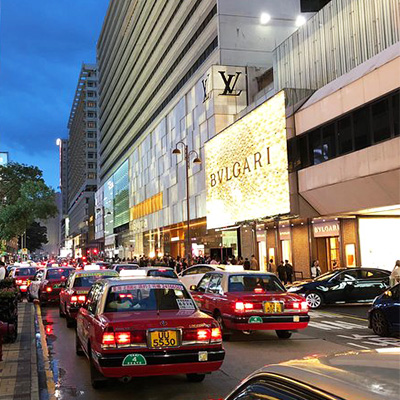

home>여행코스>싱글 코스
싱글 코스
DAY 1:홍콩 맛보기
-
15:00캔톤 로드 쇼핑몰  -
18:00너츠포드 테라스 -
20:00심포니 오브 라이트 
-
21:00몽콕 야시장
혼자여서 더 좋은 점이 있다. 쇼핑 할 때 자신의 물건만 볼 수 있다는 것. 우선 캔톤 로드의 쇼핑몰로 가서 화려한 싱글 여행족에 어울릴만한 아이템을 수집한다. 쇼핑을 마친 뒤 너츠포드 테라스에 바에 앉아 바텐더에게 말도 걸어보고, 옆자리에 앉은 외국인과 대화도 해본다. 친구가 생겼다면 같이 가도 좋고, 아니라도 괜찮다. 심포니 오브 라이트를 감상하러 사람이 북적이는 해안가로 향한다. 숙소에 그냥 들어가기 아쉬우니 몽콕 야시장에 들러 시장 구경하면서 하루를 마무리 한다.
DAY 2:혼자하는 여행
-
12:00센트럴 -
13:00포팅거 스트리트 -
14:00피크타워 -
17:00소호 


-
19:30란콰이퐁
혼자하는 여행의 최대 장점! 늦잠. 느즈막히 일어나 센트럴에서 브런치를 먹는다. 마치 서양사람이 된듯 한껏 허세도 부리면서. 여유롭게 식사를 마친 뒤 포팅거 스트리트를 둘러 보고 피크 트램에 몸을 실어본다. 꿀렁꿀렁 덜컹덜컹 좀 재밌다. 피크타워에 도착해 홍콩의 전경을 보며 이런저런 생각에 빠져보기도 한다. 다시 센트럴 소호로 내려와 간단하게 쇼핑도 하고, 불타는 밤을 보내기 위해 란콰이퐁으로 향한다. 어차피 자유로운 몸. 클럽도 좋고, 펍도 좋다. 오늘 밤은 늦게 자도 좋다. 왜냐면, 혼자 왔으니까.
DAY 3:화려한 싱글
-
11:00코즈웨이베이
마지막 날. 역시 느즈막히 일어나 코즈웨이베이의 캐피탈 카페에서 브런치를 먹으며 하루를 시작해본다. 장국영이 자주 방문했다는 캐피탈 카페의 브런치 메뉴를 먹으며, 자신도 마치 무비 스타가 된듯한 기분에 취해보기도 한다. 한껏 분위기를 낸 뒤 공항으로 향하며 여행을 마무리 한다.